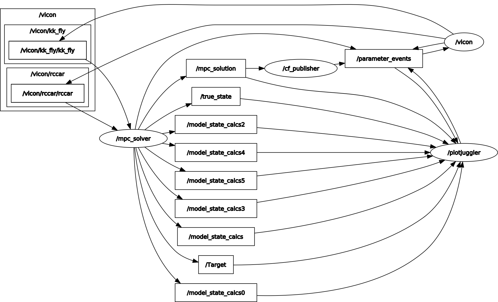

Real-time Trajectory Optimization for Obstacle Avoidance
Brief Overview
As my Masters project, I aim to perform real-time trajectory optimization for obstacle avoidance on Crazyflie - a mini quadcopter. This experimental project seeks to integrate Crazyflie’s existing attitude control with a high-level model predictive controller for online optimization. CasADi is used to formulate the MPC as a non-linear programming problem. Both simulation and hardware testing are performed. For the latter, Robotic Operating System (Ros 2) is used to integrate Crazyflie’s firmware, motion capture system (Vicon), and the high-level controller. For the model itself, the full state 12 DOF model is used to increase the accuracy of the program. The mass, intertias, and the experimental limits to velocities and thrust are determined from the bitcraze documentation. While the updates to the crazyflie’s position and orientation are derived from the motion capture system, the velocities are calculated using dirty differentiation. To transform the problem from an optimization problem to a non-linear programming problem, multiple shooting is used to discretize the dynamics. Doing so also allows to use both the state and control elements as optimization variables (also allowing to give a better approximation for the starting solution). Other methods like single shooting and direct collocation are tested in simulation. Hardware testing is still in progress; initial results can be seen below.
1. Model predictive problem formulation as a non-linear problem (NLP)
1a) Formulating MPC problem as an optimization problem
\[ \ell(\mathbf{x}, \mathbf{u}) = \left\|\mathbf{x}_u - \mathbf{x}^r\right\|_Q^2 + \left\|\mathbf{u} - \mathbf{u}^r\right\|_R^2 \]
\[ \min_{\mathbf{u}} J_N(\mathbf{x}_0, \mathbf{u}) = \sum _{k=0}^{N-1} \ell(\mathbf{x}(k), \mathbf{u}(k)) \]
subject to:
\[ \mathbf{x}_u(k+1) = \mathbf{f}(\mathbf{x}_u(k), \mathbf{u}(k)), (dynamics) \]
\[ \mathbf{x}_u(0) = \mathbf{x}_0, \]
\[ \mathbf{u}(k) \in U, \quad \forall k \in [0, N-1], \]
\[ \mathbf{x}_u(k) \in X, \quad \forall k \in [0, N]. \]
1b) Structure of the Non-linear problem
A standard formulation of the non-linear problem is given below. \(\Phi\) is the cost function which the optimization routine tries to minimize. \(g_1\) and \(g_2\) are the constraints provided to the problem. NlP can be described as linear or quadratic based on the degree of the cost function or the constraints. NLP with quadratic cost or constraints is referred to as a quadratic problem. A NLP is also said to be linear if the cost function and the constraints are affine, meaning that these functions can be expressed as linear combinations of the optimization variables (‘w’ in this case).
\[ \min_{\mathbf{w}} \Phi(\mathbf{w}) \]
Subject to:
\[ g_1(\mathbf{w}) \leq 0, (inequality-constraints) \]
\[ g_2(\mathbf{w}) = 0. (equality-constraints) \]
1c) Transcription methods
In order to convert the MPC optimization problem into a non-linear problem for CasaDy to solve (this process if referred to as transcription), we need to discretize the dynamic constraints and also introduce the constraints. Some common methods that are used for transcription are: single shooting, multiple shooting, direct collocation etc. For this project, single and multiple shooting methods are used and the results are compared (only for simulation examples). For single shooting, only the control inputs are optimized. Accordingly, the state elements are calculated based on the optimized control inputs. However, with multiple shooting, the states corresponding to the future horizon steps are also treated as constraints (at every step) which allows for the state variables to be optimization variables. This transforms the optimization problem as follows:
Cost function for multiple shooting:
\[ \min_{\mathbf{u,x}} J_N(\mathbf{x}_0, \mathbf{u}) = \sum _{k=0}^{N-1} \ell(\mathbf{x}(k), \mathbf{u}(k)) \]
Doing so does make the problem bigger (because now you have more optimization variables) but it lifts the problem to a higher dimension making the convergence much easier. Besides, multiple shooting also allows for initialization of the state variables. This allows for providing a better starting guess for the solver, which makes life easier in the long run.
1d) Constraint definition
2. Simulation Example: Toy Car Trajectory Optimization
Dynamics
\[ \dot{x} = v \cdot \cos(\theta) \]
\[ \dot{y} = v \cdot \sin(\theta) \]
\[ \dot{\theta} = w \]
Control Vector
\[ \mathbf{u} = \begin{bmatrix} \text{velocity} \\ \text{angular velocity} \end{bmatrix} \]
3. Simulation Example: Toy Car Trajectory Optimization While Avoiding Obstacles
In order to make sure that the car goes around the obstacles as it finds the new trajectory, the optimization problem is constrained to keep the signed distance between the obstacle and the car greater than some minimum. It needs to be understood that formulating this constraint like follows will make the optimization problem difficult to solve (because its not convex).
\[ d = \sqrt{(x_2 - x_1)^2 + (y_2 - y_1)^2 + (z_2 - z_1)^2} \]
Accordingly, the constraint needs to formulated as follows which retains the convex properties and makes the problem easier to converge.
\[ d^2 - \left( (x_2 - x_1)^2 + (y_2 - y_1)^2 + (z_2 - z_1)^2 \right) \leq 0 \]
4. Simulation Example: Crazyflie Trajectory Optimization While Avoiding Obstacles
4a) Setting up the model!
State vector
\[ \mathbf{x} = \begin{bmatrix} x & y & z & \dot{x} & \dot{y} & \dot{z} & \phi & \theta & \psi & p & q & r \end{bmatrix} \]
Control Vector
\[ \mathbf{u} = \begin{bmatrix} T & \tau_\phi & \tau_\theta & \tau_\psi \end{bmatrix} \]
Translation velocities
\[ \dot{x} = (\cos\theta \cos\psi) \dot{x} - \sin\psi \dot{y} + (\sin\theta \cos\psi) \dot{z} \]
\[ \dot{y} = (\cos\theta \sin\psi) \dot{x} + \cos\psi \dot{y} + (\sin\theta \sin\psi) \dot{z} \]
\[ \dot{z} = -\sin\theta \dot{x} + \cos\theta \dot{z} \]
Rotational velocities
\[ \dot{\phi} = p + q \sin\phi \tan\theta + r \cos\phi \tan\theta \]
\[ \dot{\theta} = q \cos\phi - r \sin\phi \]
\[ \dot{\psi} = \frac{q \sin\phi + r \cos\phi}{\cos\theta} \]
Translational Accelerations
\[ a_x = \frac{\text{thrust}}{m} \left( \cos\phi \sin\theta \cos\psi + \sin\phi \sin\psi \right) - (q z - r y) \]
\[ a_y = \frac{\text{thrust}}{m} \left( \cos\phi \sin\theta \sin\psi - \sin\phi \cos\psi \right) + (q x - r z) \]
\[ a_z = \frac{\text{thrust}}{m} \left( \cos\phi \cos\theta \right) - g + (p y - q x) \]
Rotational Accelerations
\[ \dot{p} = \frac{I_y - I_z}{I_x} q r + \frac{\tau_\phi}{I_x} \]
\[ \dot{q} = \frac{I_z - I_x}{I_y} p r + \frac{\tau_\theta}{I_y} \]
\[ \dot{r} = \frac{I_x - I_y}{I_z} p q + \frac{\tau_\psi}{I_z} \]
4b) Model Parameters for the MPC optimization problem initialization.
All the following parameters are SI units. For finding the thrust_max, the thrust to weight ratio (1.9) is determined from the Bitcraze documentation. Similarly, w_max (maximum angular velocity), a_max (maximum translational acceleration), inertias (I_x, I_y, I_z) are all determined from the documentation as well. The following constraints are specified for the control inputs and state variables.
| Parameter | Value | Parameter | Value |
|---|---|---|---|
| gravity | 9.81 | v_max | 1 |
| drone_radius | 0.1 | v_min | -v_max |
| I_x | 2.4*10^{-5} | w_max | 10.47 |
| I_y | I_x | w_min | -w_max |
| I_z | 3.2*10^{-5} | a_max | 4 |
| mass | 0.027 | a_min | -4 |
| bounds | inf | w_dot_max | 17.45 |
| v_max | 1 | w_dot_min | -w_dot_max |
| thrust_max | 1.9 x m x gravity | thrust_min | 0 |
| tau_max | 0.0097 | tau_min | -tau_max |
4c) Runge Kutta 4 Integration Scheme
After failing to get the integration converged through Euler integration, RK4 is used. The equations for the same are given below:
\[ k_1 = \Delta t \cdot \mathbf{f}(\mathbf{y}_n, t_n) \]
\[ k_2 = \Delta t \cdot \mathbf{f}\left(\mathbf{y}_n + \frac{1}{2} k_1, t_n + \frac{1}{2} \Delta t\right) \]
\[ k_3 = \Delta t \cdot \mathbf{f}\left(\mathbf{y}_n + \frac{1}{2} k_2, t_n + \frac{1}{2} \Delta t\right) \]
\[ k_4 = \Delta t \cdot \mathbf{f}(\mathbf{y}_n + k_3, t_n + \Delta t) \]
\[ \mathbf{y}_{n+1} = \mathbf{y}_n + \frac{1}{6} \left(k_1 + 2k_2 + 2k_3 + k_4\right) \]
5. Vicon Setup
Crazyflie:

Target:


Vicon View:
6. Robotic Operating System Architecture
For Ros2 architecture, 4 packages are created: vicon_receiver (to convert the vicon radio messages to Ros2 topics), traj_opt (which contains the 2 nodes: mpc_solver and cf_publisher), custom_msgs (custom topic and message to have the 2 nodes interacting), launcher (to create the launch file). The cf_publisher node takes care of connecting with the Crayzflie over the radio and providing a constant heartbeat (command) after every 10 msec. The mpc_solver node takes care of getting measurments from the vicon, computing the state of the crazyflie, and solving the mpc to generate the next solution. This solution - roll, pitch, yaw_rate, and thrust - are then transmitted to the crazyflie node through the custom topic - mpc_solution. The actual source files can be found in the documentation.

7. Initial Hardware Testing
Test - 1
Through initial tests, it can be seen that MPC sort of finds the way to reach the target but it is constantly hopping. After printing the output of the MPC, it was seen that the thrust value jumps from one extreme to the other as if the MPC keeps interupting the crazyflie publisher or its model integration is going for the wrong time step.
Test - 2
Fixed the hopping problem by debugging the discrepancy between the solving time of the non-linear problem and the horizon step calculation. Also re-wrote the ROS architecture to separate the MPC solver and crazyflie publisher into 2 different nodes (processes). Both nodes communicate through a custom topic which stores the MPC solution. Doing so allowed the crazyflie to have a constant heartbeat as the crazyflie publisher keeps sending commands and the MPC solves in the background.
Following is the XY trajectory graph of the crazyflie during the test run. The red point signifies the target, rc car here. The true state of the crazyflie along with the estimated state of the 5 horizon steps is also shown. As expected, the trajectory labeled /model_state_calcs5/state[0:1] is closest to the target because it is the trajectory of the 5th horizon step.
A comparison graph of the true_state vs MPC state in terms of the XY position is also shown below to prove the validity of the MPC model.
A comparison of the estimated linear x velocity of the MPC model vs the true state is shown below. The estimated velocity calculation is done using dirty differentiation (finite step differentiation + discrete low pass filter). Couple of things to note. Firstly, the MPC is solved at slower rate than the commands sent to the crazyflie and the data received from the vicon. So the data looks much more smoother.
Test - 3
Using lumped models for rotational dyanamics to account for the lag between sending setpoints and the controller on board to follow that setpoint. Accoridngly, a first order transfer function is used to simulate the lag between the crazyflie’s response and input torques. This tf lumps up the dynamics, while disregarding the coupling between the three orientation axes. To determine the time constant for this first order lag transfer function, a test script is written which makes the drone for 2 seconds and then gives a step command of 5 degrees in pitch. The corresponding response is shown below and the time constant is determined to be 300 msec for the roll axis (which should match the pitch axis as well). The filtered version (moving average filter, samples = 10) of the crazyflie’s pitch is also shown below to provide more clarity.
8. Supporting Files
The supporting files for the project can be found here